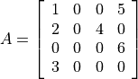

C API¶
The API can be used to extend CVXOPT with interfaces to external C routines
and libraries. A C program that creates or manipulates the dense or sparse
matrix objects defined in CVXOPT must include the cvxopt.h header
file in the src directory of the distribution.
Before the C API can be used in an extension module it must be initialized
by calling the macro import_cvxopt. As an example we show the
module initialization from the cvxopt.blas module, which itself uses
the API:
#if PY_MAJOR_VERSION >= 3
static PyModuleDef blas_module = {
PyModuleDef_HEAD_INIT,
"blas",
blas__doc__,
-1,
blas_functions,
NULL, NULL, NULL, NULL
};
PyMODINIT_FUNC PyInit_blas(void)
{
PyObject *m;
if (!(m = PyModule_Create(&blas_module))) return NULL;
if (import_cvxopt() < 0) return NULL;
return m;
}
#else
PyMODINIT_FUNC initblas(void)
{
PyObject *m;
m = Py_InitModule3("cvxopt.blas", blas_functions, blas__doc__);
if (import_cvxopt() < 0) return ;
}
#endif
Dense Matrices¶
As can be seen from the header file cvxopt.h, a matrix is
essentially a structure with four fields. The fields nrows and
ncols are two integers that specify the dimensions. The
id field controls the type of the matrix and can have values
DOUBLE, INT, and COMPLEX. The buffer
field is an array that contains the matrix elements stored contiguously in
column-major order.
The following C functions can be used to create matrices.
-
matrix *
Matrix_New(int nrows, int ncols, int id)¶ Returns a
matrixobject of type id with nrows rows and ncols columns. The elements of the matrix are uninitialized.
-
matrix *
Matrix_NewFromMatrix(matrix *src, int id)¶ Returns a copy of the matrix src converted to type id. The following type conversions are allowed:
'i'to'd','i'to'z', and'd'to'z'.
-
matrix *
Matrix_NewFromSequence(PyListObject *x, int id)¶ Creates a matrix of type id from the Python sequence type x. The returned matrix has size
(len(x), 1). The size can be changed by modifying thenrowsandncolsfields of the returned matrix.
To illustrate the creation and manipulation of dense matrices (as well as
the Python C API), we show the code for the cvxopt.uniform function
described in the section Randomly Generated Matrices.
PyObject * uniform(PyObject *self, PyObject *args, PyObject *kwrds)
{
matrix *obj;
int i, nrows, ncols = 1;
double a = 0, b = 1;
char *kwlist[] = {"nrows", "ncols", "a", "b", NULL};
if (!PyArg_ParseTupleAndKeywords(args, kwrds, "i|idd", kwlist,
&nrows, &ncols, &a, &b)) return NULL;
if ((nrows<0) || (ncols<0)) {
PyErr_SetString(PyExc_TypeError, "dimensions must be non-negative");
return NULL;
}
if (!(obj = Matrix_New(nrows, ncols, DOUBLE)))
return PyErr_NoMemory();
for (i = 0; i < nrows*ncols; i++)
MAT_BUFD(obj)[i] = Uniform(a,b);
return (PyObject *)obj;
}
Sparse Matrices¶
Sparse matrices are stored in compressed column storage (CCS) format. For a general nrows by ncols sparse matrix with nnz nonzero entries this means the following. The sparsity pattern and the nonzero values are stored in three fields:
valuesAn array of floating-point numbers of length nnz with the nonzero entries of the matrix stored columnwise.
rowindAn array of integers of length nnz containing the row indices of the nonzero entries, stored in the same order as
values.colptrAn array of integers of length ncols + 1 with for each column of the matrix the index of the first element in
valuesfrom that column. More precisely,colptr[0]is0, and for k = 0, 1, …, ncols - 1,colptr[k+1]is equal tocolptr[k]plus the number of nonzeros in column k of the matrix. Thus,colptr[ncols]is equal to nnz, the number of nonzero entries.
For example, for the matrix

the elements of values, rowind, and colptr
are:
values:1.0, 2.0, 3.0, 4.0, 5.0, 6.0
rowind:0, 1,3, 1, 0, 2
colptr:0, 3, 3, 4, 6.
It is crucial that for each column the row indices in rowind are
sorted; the equivalent representation
values:3.0, 2.0, 1.0, 4.0, 5.0, 6.0
rowind:3, 1, 0, 1, 0, 2
colptr:0, 3, 3, 4, 6
is not allowed (and will likely cause the program to crash).
The nzmax field specifies the number of non-zero elements the
matrix can store. It is equal to the length of rowind and
values; this number can be larger that colptr[nrows],
but never less. This field makes it possible to preallocate a certain
amount of memory to avoid reallocations if the matrix is constructed
sequentially by filling in elements. In general the nzmax field
can safely be ignored, however, since it will always be adjusted
automatically as the number of non-zero elements grows.
The id field controls the type of the matrix and can have
values DOUBLE and COMPLEX.
Sparse matrices are created using the following functions from the API.
-
spmatrix *
SpMatrix_New(int_t nrows, int_t ncols, int_t nzmax, int id)¶ Returns a sparse zero matrix with nrows rows and ncols columns. nzmax is the number of elements that will be allocated (the length of the
valuesandrowindfields).
-
spmatrix *
SpMatrix_NewFromMatrix(spmatrix *src, int id)¶ Returns a copy the sparse matrix var{src}.
-
spmatrix *
SpMatrix_NewFromIJV(matrix *I, matrix *J, matrix *V, int_t nrows, int_t ncols, int id)¶ Creates a sparse matrix with nrows rows and ncols columns from a triplet description. I and J must be integer matrices and V either a double or complex matrix, or
NULL. If V isNULLthe values of the entries in the matrix are undefined, otherwise they are specified by V. Repeated entries in V are summed. The number of allocated elements is given by nzmax, which is adjusted if it is smaller than the required amount.
We illustrate use of the sparse matrix class by listing the source
code for the real method, which returns the real part of
a sparse matrix:
static PyObject * spmatrix_real(spmatrix *self) {
if (SP_ID(self) != COMPLEX)
return (PyObject *)SpMatrix_NewFromMatrix(self, 0, SP_ID(self));
spmatrix *ret = SpMatrix_New(SP_NROWS(self), SP_NCOLS(self),
SP_NNZ(self), DOUBLE);
if (!ret) return PyErr_NoMemory();
int i;
for (i=0; i < SP_NNZ(self); i++)
SP_VALD(ret)[i] = creal(SP_VALZ(self)[i]);
memcpy(SP_COL(ret), SP_COL(self), (SP_NCOLS(self)+1)*sizeof(int_t));
memcpy(SP_ROW(ret), SP_ROW(self), SP_NNZ(self)*sizeof(int_t));
return (PyObject *)ret;
}